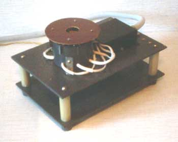
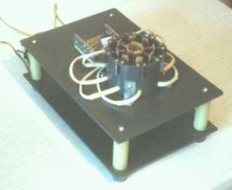
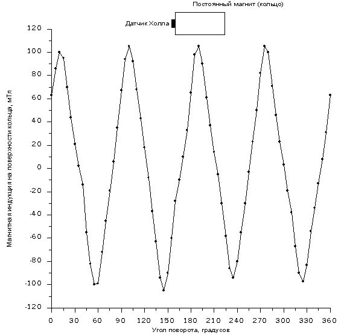

Устройство для
8-полюсного радиального импульсного
намагничивания ферритовых колец диаметром до 25 мм

Назначение
Устройство намагничивающее импульсное
8-полюсное радиальное предназначено для работы в составе установок
намагничивания [5] в комплекте с однополярным генератором мощных импульсов тока
[1]. Оно позволяет производить радиальное восьмиполюсное с переменной
полярностью намагничивание феррит-бариевых или феррит-стронциевых постоянных
магнитов марок БА, СА, а также магнитопластов [2] на их основе - колец диаметром
до 25 мм и высотой до 20 мм.
Технические данные:
- число полюсов - 8, направление
намагничивания - радиальное с чередующейся полярностью
- размеры зоны намагничивания: диаметр до
25 мм, высота 20 мм; диаметр зоны намагничивания можно регулировать
перемещением полюсных наконечников
- амплитуда магнитной индукции на
поверхности полюсных наконечников не менее 1 Тл при амплитуде импульса тока
не более 400 А
- длительность импульса тока не более 10 мс
- форма импульса тока произвольная
(например, колоколообразная или с экспоненциальным фронтом и спадом)
- частота следования импульсов тока не
более 1 импульса в 0.5 мин при включенном вентиляторе и не более 1 импульса
в 5 мин при отключенном вентиляторе
- готовность к работе - сразу после
включения
- габаритные размеры не более 200 х 300 х
180 мм3
- масса не более 2.5 кг
Устройство снабжено охлаждающим вентилятором.
Производительность при использовании вентилятора до 120 циклов намагничивания в
час.

Рис. 1. Внешний вид намагничивающего
устройства со снятыми защитными крышками.
На рис. 2 показано распределение радиальной
составляющей магнитной индукции вдоль средней линии боковой поверхности
(экватора) намагниченного в устройстве феррит-бариевого кольца типоразмера К22 х
6 х 10 в зависимости от угловой координаты. Измерения производились на
поворотном столике [3] с помощью тесламетра [4].

Рис. 2. Распределение осевой составляющей
магнитной индукции вдоль экваториальной линии кольца из феррита бария диаметром
22 мм высотой 10 мм.
Ссылки:
-
Генератор мощных импульсов тока однополярный
-
Изготовление и применение магнитопластов (магнитоэластов)
-
Поворотный столик с датчиком угла поворота для изучения топографии
магнитного поля
-
Приборы для измерения магнитных полей
-
Установки импульсного намагничивания и размагничивания постоянных магнитов
Словарь терминов:
- Генератор импульсов - прибор или
устройство для создания последовательности импульсов.
- Импульсный генератор -
генератор импульсов напряжения или тока.
- Магнитная индукция -
вектор, численно равный пределу отношения силы, действующей со стороны
магнитного поля на элемент проводника с электрическим током, к произведению
тока и длины элемента проводника, если длина этого элемента стремится к
нулю, а элемент так расположен в поле, что этот предел имеет наибольшее
значение, и направленный перпендикулярно к направлению элемента проводника и
к направлению силы, действующей на этот элемент со стороны магнитного поля,
причем из его конца вращение по кратчайшему расстоянию от направления силы к
направлению тока в элементе проводника должно быть видно происходящим против
часовой стрелки.
- Магнитопласт
- полимерный постоянный магнит, изготовленный на основе смеси
магнитотвердого порошка и связующего полимера.
- Многополюсный магнит -
постоянный магнит, имеющий более одной пары магнитных полюсов.
- Намагничивание
- воздействие на образец магнитным полем, вследствие которого у образца
появляется отличная от нуля остаточная намагниченность.
- Постоянный магнит -
объект, создающий магнитное поле за счет собственных внутренних элементарных
электрических токов, текущих без использования внешнего источника энергии в
составляющем объект материале.
- Феррит бария -
магнитотвердый материал на основе окислов железа и бария состава BaO·6Fe2O3.
В обозначении марки (например, 19БА190) первое число (19) обозначает
энергетическое произведение (в кА·Тл/м), первая буква - состав феррита (Б -
бариевый), вторая буква - свойства (А - анизотропный, И - изотропный),
второе число (190) - коэрцитивную силу по намагниченности (в кА/м).
- Феррит стронция -
магнитотвердый материал на основе окислов железа и стронция состава SrO·6Fe2O3.
В обозначении марки (например, 28СА250) первое число (28) обозначает
энергетическое произведение (в кА·Тл/м), первая буква - состав феррита (С -
стронциевый), вторая буква - свойства (А - анизотропный, И - изотропный),
второе число (250) - коэрцитивную силу по намагниченности (в кА/м).
16.03.2004
12.07.2004
08.09.2005
18.02.2006
23.06.2010
Альтернативные источники энергии
Компьютеры и
Интернет
Магнитные поля
Механотронные системы
Перспективные
разработки
Электроника и
технология
Главная
страница